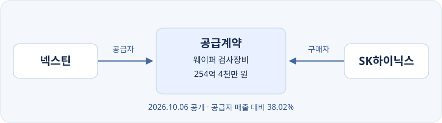

거래 관계는 한국 주식의 방향 예측에 도움이 되는가?
2026년 10월 1일~11월 26일을 하나의 테스트셋으로 평가했습니다. 삼성전자와 SK하이닉스를 포함한 39거래일 · 659개 종목·거래일에서 거래 경로 모형의 정확도는 직접 공시 모형보다 0.15%p 낮았습니다. 비용 후 누적수익률은 가격 모형이 네 모형 중 가장 높았습니다.
연구 질문
기업의 주가를 예측할 때 그 기업이 낸 공시만 읽으면 거래 상대가 공개한 정보를 놓칠 수 있습니다. 공급계약으로 관계가 확인된 상대 기업의 공시를 추가했을 때, 같은 종목과 날짜에서 예측 정확도와 비용 후 성과가 좋아지는지 조사했습니다. 삼성전자와 SK하이닉스도 같은 모형과 기준으로 평가했습니다.
관련 연구
TRACE는 과거 그래프에서 추출한 규칙으로 다중 홉 탐색을 제한하고, 뉴스에 닿는 경로를 LLM으로 평가합니다. 이번에는 공개 시점과 원문 근거를 유지하는 원칙을 적용했습니다. 비교를 쉽게 해석할 수 있도록 기간이 확인되는 거래 관계와 로지스틱 회귀를 사용했습니다. 시장, 예측 수익률 구간, 모형이 달라 논문의 성능 수치와 직접 비교하기는 어렵습니다. Ding 외, TRACE (2026)
기업 관계를 시계열 주가 모형의 입력으로 쓴 연구와, 공시 사건 주변의 수익률을 비교하는 사건 연구를 참고했습니다. 이번 실험의 목적은 관계를 추가했을 때의 예측 성능 측정입니다. Feng 외, Temporal Relational Ranking · MacKinlay, Event Studies in Economics and Finance
데이터와 방법론
EC2의 Neo4j에서 공급계약 1,294건, 계약 조건 정정 83건, 시설투자 발표 37건, 매출·영업이익 관측값 2,160개를 조회했습니다. 구매자가 확인된 계약은 226건입니다. 적재 범위는 2026년 1월 1일~11월 26일의 코스피·코스닥·코넥스 대상 공시입니다. 시세는 네이버 일봉을 사용했고, 거래 이력과 기업 식별이 맞는 종목·거래일만 평가했습니다. 경제 사건 그래프와 원문 검증

어떤 정보가 예측에 들어갔나
| 모형 | 어떤 정보를 쓰나 | 예시 |
|---|---|---|
| 가격 | 직전 거래일까지의 1·5·20거래일 수익률과 최근 거래량을 봅니다. | 삼성전자 주가의 최근 흐름과 거래량을 확인합니다. |
| 가격 + 직접 공시 | 가격 정보에 예측 대상 기업이 낸 공급계약·정정·시설투자·실적 공시 건수와 계약 규모·예정 투자액을 더합니다. | 삼성전자가 직접 공시한 시설투자를 반영합니다. |
| 가격 + 직접 공시 + 계약 역할 | 직접 공시까지 사용하고, 해당 기업이 다른 회사의 공시에서 구매자로 언급됐는지와 확인된 거래 상대 수를 더합니다. | 넥스틴의 신규 계약에서 SK하이닉스가 구매자였다는 사실을 반영합니다. |
| 가격 + 직접 공시 + 거래 경로 | 계약 역할까지 사용하고, 이미 공개돼 유효한 계약을 따라 거래 상대 기업의 공급계약·정정·시설투자·실적 공시를 더합니다. | 기존 계약으로 연결된 공급사가 새 실적 공시를 내면 구매자 예측에도 그 공시 여부를 반영합니다. |
매출과 영업이익이 같은 실적 공시에 들어 있으면 공시 한 건으로 셉니다.
새 공시가 공개된 날짜보다 앞선 계약만 거래 경로에 사용했습니다. 계약 시작·종료일은 그 시점에 알려진 값을 적용했고, 같은 공개일에 조건이 충돌하면 해당 계약을 경로에서 제외했습니다. 시설투자를 특정 공급계약에 귀속하려면 원문에 직접 근거가 필요합니다.
비교 단위는 모든 모형에서 같은 종목·거래일입니다. 공시 기업과 공급계약 당사자가 기본 후보이며, 삼성전자(005930)와 SK하이닉스(000660)는 공시가 없는 거래일도 넣었습니다. 다음 거래일 시가에 진입해 종가까지의 수익률을 예측합니다. 0%는 비상승으로 분류했습니다.
| 구간 | 2026년 기간 | 거래일 | 종목·거래일 | 종목 | 상승 |
|---|---|---|---|---|---|
| 학습 | 1월~6월 | 120 | 1334 | 555 | 530 |
| 검증 | 7월~8월 | 42 | 605 | 396 | 242 |
| 테스트 | 10월 1일~11월 26일 | 39 | 659 | 423 | 284 |
규제 강도는 7~8월 검증 구간의 균형 정확도로 골랐습니다. 모형은 1~8월 자료로 학습한 뒤 10월 1일~11월 26일 테스트셋 전체에 고정해 적용했습니다. 9월은 분할에서 제외했습니다. 11월 6일 공시는 다음 거래일인 11월 9일의 예측에 반영했습니다.
실험 결과
상승 확률이 0.5 이상인 종목을 시가에 동일가중 매수하고 종가에 청산하는 규칙을 비교했습니다. 아래 수익률은 왕복 비용 20bp를 공제한 누적수익률입니다. 거래가 없는 날은 수익률 0으로 처리했습니다. 샤프는 무위험수익률 0과 연 252거래일을 기준으로 계산했습니다.
| 모형 | 정확도 | 균형 정확도 | 상승 F1 | 진입 건수 | 순수익률 | 샤프 | 최대낙폭 |
|---|---|---|---|---|---|---|---|
| 가격 | 56.90% | 50.43% | 6.58% | 20 | −5.98% | −0.51 | −18.38% |
| 가격 + 직접 공시 | 56.30% | 50.75% | 17.24% | 64 | −31.78% | −3.31 | −31.78% |
| 가격 + 직접 공시 + 계약 역할 | 56.30% | 50.45% | 13.77% | 50 | −31.34% | −3.33 | −33.46% |
| 가격 + 직접 공시 + 거래 경로 | 56.15% | 50.27% | 13.21% | 49 | −29.83% | −3.12 | −31.99% |

비상승만 예측한 기준선의 정확도는 56.90%였습니다. 거래 경로 추가에 따른 정확도 차이의 거래일 단위 재표집 95% 구간은 −1.66~+1.71%p였습니다. 별도로 보존한 초기 실험 기록
삼성전자와 SK하이닉스
모형별 셀은 방향을 맞힌 거래일 / 평가 거래일 · 비용 후 누적수익률입니다. 자체 공시와 관계를 통한 공시가 같은 거래일에 겹칠 수 있습니다.
| 종목 | 거래일 | 자체 공시 일수 | 구매자 노출 일수 | 거래 상대 공시 일수 | 가격 | 가격 + 직접 공시 | 가격 + 직접 공시 + 계약 역할 | 가격 + 직접 공시 + 거래 경로 |
|---|---|---|---|---|---|---|---|---|
| 삼성전자 | 39 | 2 | 8 | 15 | 25/39 · +0.73% | 25/39 · +10.43% | 26/39 · +3.55% | 26/39 · +3.55% |
| SK하이닉스 | 39 | 1 | 6 | 7 | 20/39 · −2.14% | 17/39 · −8.16% | 18/39 · −4.90% | 18/39 · −4.90% |
한계
- 테스트는 39거래일이며, 일부 날짜는 초기 실험에서도 사용했습니다. 관계를 통한 예측 효과와 매수 전략의 장기 성과를 판단하기에는 기간이 짧습니다. 단기 연환산 샤프의 절댓값은 크게 움직일 수 있습니다.
- 공시 유형과 공개된 국내 상장 구매자에 따라 그래프의 범위가 달라집니다. 거래할 수 있는 모든 한국 종목의 무조건적 성과로 일반화하기 어렵습니다.
- 가격 소스의 수정주가 처리 및 실제 시가·종가 체결을 독립 검증하지 않았습니다. 공시 목록은 일 단위로 사용했고, 일별 선후관계를 보수적으로 처리했습니다.
후속 연구
유효 계약을 통한 공시 전파를 더 긴 새 기간에서 반복하고, 업종과 기업 규모를 맞춰 거래 상대를 바꾼 대조군을 둡니다. 그러면 같은 날 공시가 많은 경우와 실제 거래 상대가 공시한 경우를 구별할 수 있습니다. 시설투자와 공급계약을 직접 연결하는 실험은 공시가 시설이나 프로젝트를 명시한 경로로 한정합니다.
EC2에서 내보낸 그래프와 보관 일봉으로 단일 테스트셋의 결과를 다시 계산했습니다. 상세 수치와 재현 방법